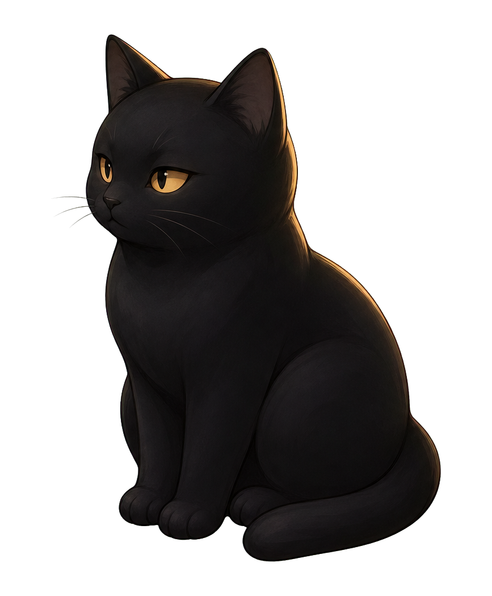

青尘印 · 暮光山谷
纸卷初展 · 山路向前
暮色沿山谷落下，卷轴在路口慢慢展开。
起行卷 · 山路向前
一卷入山路，沿途设有驿站与停驻点。
当前：小序 · 从谷口读一段自序。
小序
这里是「步青尘」的山谷。 我在纸上走路，也在生活里行走。 记录所见、所思、所学、所行， 也收藏一些温柔而安定的瞬间。 愿你在此，遇见一段属于自己的路。
驿站
从卷轴上选择一处停驻，或者继续沿山路向前。
在山谷入口读一段简短自述。
作品、练习与正在走的路。
短文、记录和落在纸上的想法。
把每天学到的东西留成里程石。
山影、微雾与生活里的安静片段。
月下生微灯，雪落听清音。
写下一句话，或者寄来一封信。
一只同行的小猫，陪我走过山路与雪夜。

同行者
愿意醒来，愿意可爱，有体温感。它不是装饰，是陪伴入口。
听雪
月下生微灯，雪落听清音。把背景音乐留给另一个安静房间。
卷末
暮光山谷、夜行山路、纸卷地图、黑金水墨。
愿意醒来，愿意可爱，有体温感，不是装饰，是陪伴入口。
静态网站（HTML + CSS + JS）、GitHub Pages 部署、响应式设计、支持 reduced-motion、不引入新框架。